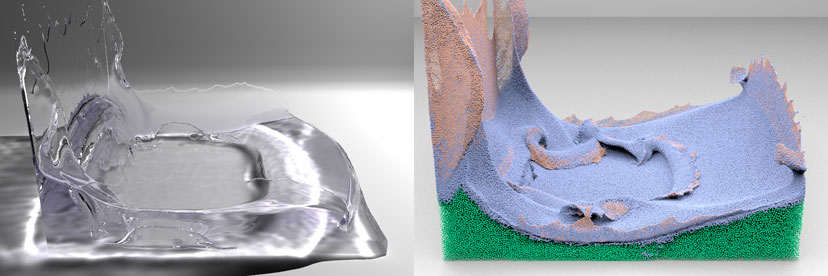

Ryoichi Ando, Nils Thürey, Reiji Tsuruno
IEEE Transactions on Visualization and Computer Graphics (TVCG), 2012.
This is an extended paper of our SCA2011 paper.

Dam breaking setup. The right side shows our adaptively sampled simulation employing our particle-based thin sheet preservation algorithm. Left side shows its rendered image. Click here for the large image.
This paper presents a particle-based model for preserving fluid sheets of animated liquids with an adaptively sampled Fluid-Implicit-Particle (FLIP) method. In our method, we preserve fluid sheets by filling the breaking sheets with particle splitting in the thin regions, and by collapsing them in the deep water. To identify the critically thin parts, we compute the anisotropy of the particle neighborhoods, and use this information as a resampling criterion to reconstruct thin liquid surfaces. Unlike previous approaches, our method does not suffer from diffusive surfaces or complex re-meshing operations, and robustly handles topology changes with the use of a meshless representation. We extend the underlying FLIP model with an anisotropic position correction to improve the particle spacing, and adaptive sampling to efficiently perform simulations of larger volumes. Due to the Lagrangian nature of our method, it can be easily implemented and efficiently parallelized. The results show that our method can produce visually complex liquid animations with thin structures and vivid motions.
Paper (PDF)
Ryoichi Ando, Nils Thürey, Reiji Tsuruno. Preserving Fluid Sheets with Adaptively Sampled Anisotropic Particles.
IEEE Transactions on Visualization and Computer Graphics (TVCG), 2012. Link to the article.
Bibtex (Text)
A bibtex format file for the latex processor.
Movie (MP4)
Demonstration 60fps video (76.8 MB)